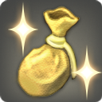

I have this. Should I keep it?
Answer until one is yes. Keyboard: Y / N, R to restart.
Quick rules of thumb
The short version of everything below.
Where things actually go
Each storage has one job. Capacity up top, what belongs there in the middle, the catch at the bottom.
Getting rid of it: compare the options
Decided it goes? Pick the exit that pays best for what it is.
Doman Enclave payout climbs as you donate
Weekly bonus cap resets Tuesday 8am GMT

Easy cap filler: Allagan Silver Pieces from 18-hour retainer ventures, and Eureka demimateria.Does my gil change the effort?
Yes. Pick your balance. Purely my own take.
What never comes back
A short list on purpose. Everything else quest-related is almost certainly on the Calamity Salvager's buy-back list.
All questions
Each one shows the short answer. Open it for the details and sources.
What not to do
Habits that quietly undo everything above.
Lookups & plugins
The sites I actually open to get real numbers, and Dalamud plugins that automate most of this. Install notes on the Plugins page.
Lookups
Plugins (PC)
Sources & further reading
Everything this guide cites, in one place.
Image credits
Game icons via XIVAPI. Icons and screenshots saved locally from the Console Games Wiki (Armoire, Materia, Doman Enclave Reconstruction, Glamour Prism). All game imagery © SQUARE ENIX.